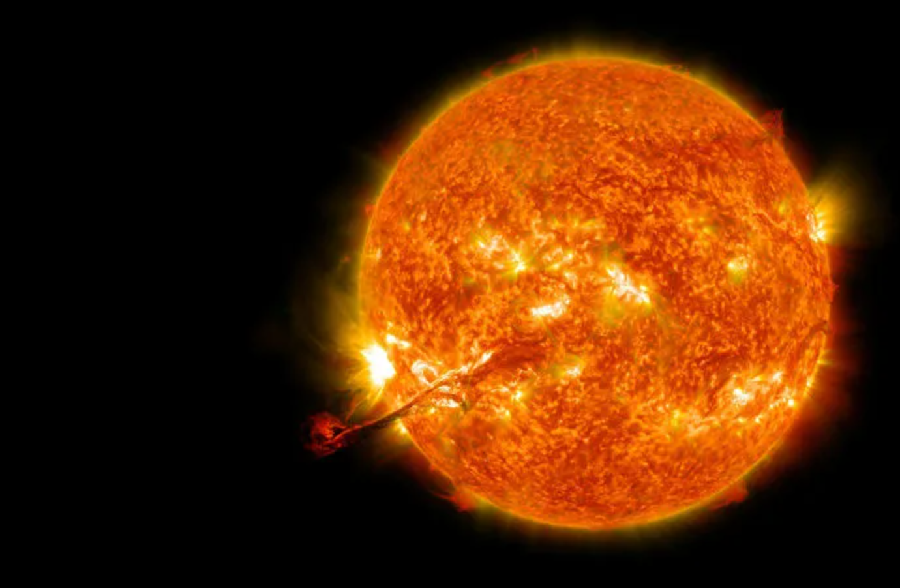

O Sol é a estrela mais próxima da Terra, dista aproximadamente 150 milhões de quilômetros de nós, e é responsável por manter todo o Sistema Solar em sua interação gravitacional: oito planetas e os demais corpos celestes que o compõem, como planetas anões, asteroides e cometas.
A composição do Sol é de 74% de hidrogênio e 24% de hélio, sendo o percentual restante formado principalmente por oxigênio, carbono e ferro. Toda a energia produzida pelo Sol é proveniente do processo de fusão nuclear decorrente das grandes temperaturas de seu núcleo (cerca de 15 milhões de kelvin) e de sua enorme pressão.
Consequentemente, nossa estrela é capaz de converter átomos de hidrogênio em hélio, e os números são incríveis: a cada segundo, o Sol funde cerca de 600 milhões de toneladas de hidrogênio em hélio, convertendo parte dessa massa em energia, na forma de ondas eletromagnéticas, como os raios gama.
Ao todo, o Sol consome cerca de 4 milhões de toneladas de sua massa por segundo, uma taxa mais do que suficiente para mantê-lo brilhando pelos próximos 6 ou 7 bilhões de anos, devido à sua grande massa, que é de aproximadamente 1,98.1031 kg, mais de 330 mil vezes a massa da Terra.
Por conta de sua enorme massa, a gravidade na superfície do Sol chega a 274 m/s², 27,4 vezes maior que a massa da Terra. Isso faz com que a velocidade de escape por lá chegue aos 617 km/s, mais de 2 milhões de quilômetros por hora.
O período de rotação do Sol em torno do seu próprio eixo é de 27 dias para o seu equador, que gira a 7189 km/h, e de 35 dias para os seus polos. Essa diferença de período rotacional produz uma rotação diferencial (chamada de dínamo solar), responsável por sua grande atividade magnética, uma vez que toda a matéria presente na estrela encontra-se ionizada (no estado plasmático), dando origem às tempestades solares, erupções coronárias e manchas solares.
O Sol pode ser dividido em partes com diferentes propriedades físicas, a saber:
Estima-se que a idade do Sol seja de 4,6 bilhões de anos e que, daqui a cerca de 7 bilhões de anos, ele será uma gigante vermelha, com um raio equatorial 200 vezes maior que o atual (de 6,963.108 m, quase 109 vezes o raio da Terra) e até 5000 vezes mais brilhante, “engolindo” a órbita do nosso planeta.
Ao atingir essa marca, o Sol será capaz de fundir átomos de carbono devido às altas temperaturas. Os estágios finais da evolução estelar do Sol indicam que essa estrela se tornará uma anã branca — uma classe de estrelas extremamente densas —, apresentando menos da metade de sua massa atual devido ao processo de fusão nuclear e à emissão de ventos solares, comprimida em um raio até 17 vezes menor, deixando em sua volta uma grande nuvem de poeira estelar.
O Sol é considerado uma estrela de sequência principal (que produz sua energia por meio da fusão do hidrogênio),
de categoria anã amarela. Apesar do nome, não é uma estrela pequena ou de cor amarelada,
é na verdade maior e mais brilhante que boa parte das estrelas visíveis a olho nu, apesar de estar muito longe de ser uma das maiores, ou mais luminosas.
O adjetivo amarela, por sua vez, está relacionado à temperatura de sua superfície (cerca de 6000 ºC) e a sua luminosidade: trata-se de uma estrela muito mais fria e menos luminosa que as chamadas de brancas e azuis.
Além disso, o Sol é capaz de produzir todos os comprimentos de onda da luz visível, de forma que, ao ser observado de fora da Terra, sua cor é branca.
O tom amarelo que observamos ao olhar para esse astro surge devido à dispersão dos raios solares ao adentrarem a atmosfera, observe a foto a seguir,
tirada a 22 km de altura.
A temperatura do Sol é bastante variada e pode ser bastante complexa de compreender, devido à grande quantidade de conceitos envolvidos para a sua explicação. O núcleo solar pode chegar a 15 milhões de kelvin, é nessa região onde se formam os átomos de hélio por meio da fusão nuclear. A região imediatamente próxima do núcleo, conhecida como zona radiativa, pode apresentar temperaturas que variam entre 2 e 7 milhões de kelvin.
Às margens da zona radiativa, encontra-se a zona convectiva, onde se formam grandes correntes de plasma que são capazes de transmitir energia ao exterior do Sol por meio da convecção. A zona convectiva tem uma temperatura média de 2 milhões de kelvin. A superfície do Sol, por sua vez, chamada de fotosfera, apresenta uma temperatura média de 5778 de kelvin.
A energia produzida pelo Sol chega parcialmente à Terra em forma de ondas eletromagnéticas. Na superfície terrestre, a intensidade da radiação solar chega a 1366 kW/m² (quilowatts por metro quadrado), e esse valor varia menos que 0,1 % durante todo o período orbital. Toda essa energia é proveniente de fusões nucleares que ocorrem no núcleo do Sol e são capazes de converter átomos de hidrogênio em átomos de hélio.

Durante o processo de fusão, cerca de 0,7% da massa dos átomos de hidrogênio é transformada em energia, de acordo com a famosa equação do físico
Albert Einstein: E = mc². Por meio dessa fórmula, podemos estimar que cada fusão nuclear é capaz de liberar até 6,8 megaelétron-volts (MeV).
Cerca de 1,3% de toda a energia que é produzida pelo Sol está na forma de minúsculas partículas chamadas de neutrinos.
Os neutrinos são tão pequenos que são capazes atravessar o interior do nosso planeta sem tocar em um único átomo sequer.
O Sol emite uma enorme quantidade dessas partículas, para ter-se uma ideia, aqui na Terra estamos expostos a um fluxo de 8.1010 neutrinos por centímetro quadrado, a cada segundo.
Como já sabemos, grande parte restante da energia que é produzida pelo Sol é emitida em forma de ondas eletromagnéticas.
Os fótons de luz que são criados no núcleo solar só conseguem chegar à sua superfície após um período de aproximadamente 170 mil anos.
Isso acontece em razão da alta densidade no interior do Sol, portanto, ao olharmos para o astro, a luz que chega aos nossos olhos foi produzida há pelo menos 170 mil anos.
Depois de deixar o Sol, a luz leva pouco mais de oito minutos para chegar até a Terra.
Quando as partículas do vento solar encontram o campo magnético terrestre, elas são aceleradas e espiralam em direção aos polos magnéticos da Terra.
A excitação causada pelo atrito entre as partículas do vento solar e a atmosfera resulta na emissão de luz visível, conhecida popularmente como aurora polar.
Estima-se que a influência magnética do Sol estenda-se entre 84 e 94 unidades astronômicas. Nessas distâncias, ainda é possível detectar a presença do vento solar
e a influência do campo magnético do Sol. A unidade astronômica, por sua vez, é equivalente à distância entre a Terra e o Sol, ou seja, cerca de 150 milhões de quilômetros.
Para efeito de comparação, o planeta Netuno encontra-se a 30 unidades astronômicas do Sol.